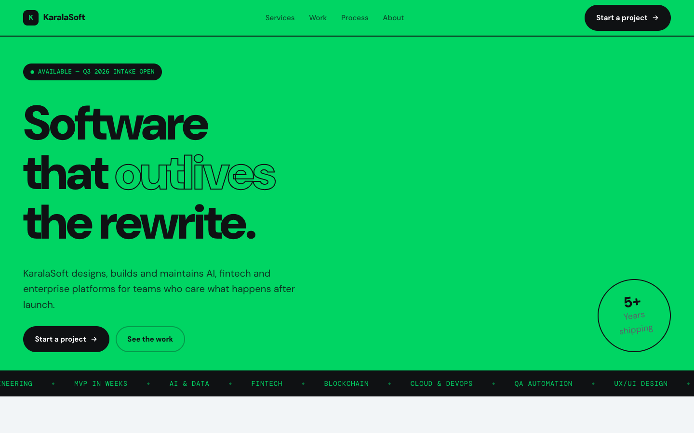

Direction B
Brand Poster
Inverted and loud. Full-bleed emerald hero with near-black type, outlined display word, 2px borders and offset shadows throughout. Services become a numbered table; ticker bands divide the sections. Highest memorability, and the one that most needs a designer to restrain it.
Open design B